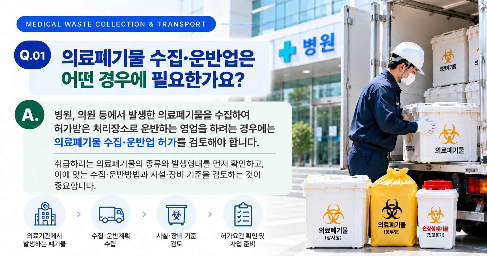
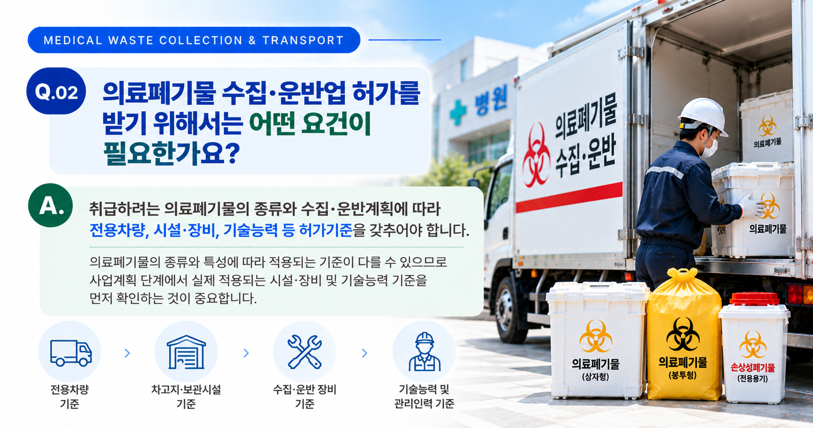
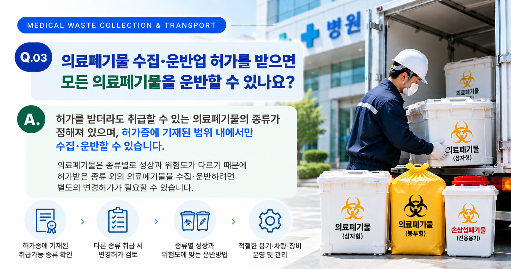

의료폐기물 수집·운반업은 일반적인 폐기물 수집·운반업과 동일하게 준비해서는 안 됩니다. 먼저 취급하려는 폐기물이 의료폐기물에 해당하는지와 구체적인 종류·발생형태를 확인하고, 실제 수집·운반방법과 이에 적용되는 시설·장비 기준을 순서대로 검토하는 것이 중요합니다.
01. 의료폐기물 수집·운반업이란?
병원·의원 등 의료기관에서 발생하는 의료폐기물을 수집하여 적법한 처리장소까지 운반하는 영업을 하려는 경우에는 의료폐기물 수집·운반업 허가 여부를 검토해야 합니다.
의료폐기물은 감염 등의 위해 가능성을 고려하여 별도의 관리기준이 적용되므로, 일반 폐기물과 구분하여 수집·운반계획을 세워야 합니다.
- 어떤 의료폐기물을 취급할 것인지
- 어느 사업장에서 발생하는 폐기물인지
- 어디에서 수집하여 어디로 운반할 것인지
- 어떤 방법으로 수집·운반할 것인지
- 필요한 차량·장비와 시설을 어떻게 확보할 것인지

02. 취급할 의료폐기물부터 구체적으로 확인합니다
허가 준비의 출발점은 단순히 '의료폐기물을 운반한다'고 정하는 것이 아니라 실제 취급하려는 의료폐기물의 종류와 발생형태를 구체적으로 확인하는 것입니다.
| 확인사항 | 주요 내용 |
|---|---|
| 폐기물 종류 | 실제 수집·운반하려는 의료폐기물의 종류와 범위를 확인합니다. |
| 발생 사업장 | 병원·의원 등 어떤 사업장에서 발생하는 폐기물인지 확인합니다. |
| 발생형태 | 실제 배출되는 형태와 수집·운반 시 취급방법을 확인합니다. |
| 처리장소 | 수집한 의료폐기물을 운반할 적법한 처리장소를 확인합니다. |
03. 실제 수집·운반계획을 구체화합니다
취급하려는 의료폐기물이 정해졌다면 실제 영업방식을 구체적으로 정리해야 합니다. 수집지역과 배출사업장, 운반할 처리장소 및 운반방법 등이 서로 연결되어 있어야 합니다.
주요 검토사항
- 의료폐기물의 수집지역
- 주요 배출사업장의 유형
- 수집 예정 의료폐기물의 종류
- 수집주기와 운반방법
- 운반할 처리장소
- 예상 수집량과 운반계획
이 과정이 구체적으로 정리되어야 필요한 차량과 장비 및 사업계획서의 내용을 실제 사업에 맞게 작성할 수 있습니다.

04. 의료폐기물에 적용되는 시설·장비 기준을 확인합니다
의료폐기물 수집·운반업은 일반 지정폐기물 수집·운반업과 시설·장비 기준이 다릅니다. 따라서 다른 폐기물 업종의 기준을 그대로 적용해서는 안 됩니다.
| 구분 | 주요 기준 |
|---|---|
| 냉장차량 | 적재능력 0.45톤 이상의 냉장차량으로서 4℃ 이하를 유지할 수 있는 차량 3대 이상 |
| 소독장비 | 약물소독장비 1식 이상 |
| 주차장 | 보유한 모든 차량을 주차할 수 있는 규모 |
| 연락장소 또는 사무실 | 영업에 필요한 연락장소 또는 사무실 확보 |
따라서 차량부터 먼저 구입하기보다는 실제 영업대상과 사업계획을 정리한 후 적용되는 허가기준을 확인하여 준비하는 것이 안전합니다.
05. 의료폐기물 전용용기와 운반방법도 중요합니다
의료폐기물은 종류와 특성에 따라 적정한 전용용기를 사용하고, 보관·수집·운반 과정에서도 관련 기준을 준수해야 합니다.
특히 의료폐기물의 종류에 따라 용기의 형태와 표시방법 등이 달라질 수 있으므로, 단순히 동일한 수거용기를 일괄 사용하는 방식으로 계획해서는 안 됩니다.
- 취급 의료폐기물의 종류 확인
- 해당 폐기물에 적합한 전용용기 확인
- 수집·운반 과정의 보관 및 취급방법 확인
- 운반차량의 냉장기능과 관리방법 확인
- 차량과 관련 장비의 소독·관리계획 검토
06. 폐기물처리 사업계획서를 준비합니다
의료폐기물 수집·운반업 허가는 곧바로 최종 허가신청부터 하는 것이 아니라, 먼저 폐기물처리 사업계획서를 제출하여 사업계획의 적합 여부를 검토받는 절차가 선행됩니다.
사업계획 단계에서 정리할 주요 내용
- 영업대상 의료폐기물의 종류
- 의료폐기물의 예상 수집량
- 수집지역과 주요 배출사업장
- 수집·운반방법
- 운반할 처리장소
- 냉장차량 확보계획
- 약물소독장비 확보계획
- 주차장 및 연락장소·사무실 확보계획
- 그 밖에 사업계획 검토에 필요한 사항
사업계획서에 기재한 내용과 이후 실제 허가단계에서 확보하는 차량·시설·장비가 서로 맞아야 하므로, 처음 사업계획을 작성할 때부터 실제 운영계획을 충분히 반영하는 것이 중요합니다.

07. 사업계획 적합통보 후 허가를 준비합니다
폐기물처리 사업계획에 대해 적합통보를 받으면 통보된 사업계획에 따라 필요한 차량·시설·장비 등을 갖춘 후 폐기물 수집·운반업 허가를 신청하게 됩니다.
폐기물 수집·운반업은 사업계획 적합통보를 받은 날부터 원칙적으로 6개월 이내에 필요한 요건을 갖추어 허가를 받아야 하므로, 적합통보 이후의 준비일정도 미리 계획하는 것이 좋습니다.
08. 신청 전 전체 준비사항을 다시 확인합니다
의료폐기물 수집·운반업은 차량만 갖춘다고 허가 준비가 끝나는 것이 아닙니다. 취급하려는 의료폐기물과 실제 영업계획, 시설·장비 및 제출자료가 서로 일치하는지 전체적으로 확인하는 것이 중요합니다.
의료폐기물 수집·운반업을 준비하고 계신가요?
현재 준비상태를 먼저 확인해 보시거나, 취급하려는 의료폐기물과 사업계획을 기준으로 허가 준비사항을 상담받으실 수 있습니다.
※ 의료폐기물 수집·운반업의 허가기준과 제출자료 및 구체적인 적용방법은 사업내용과 취급하려는 의료폐기물의 종류, 관련 법령의 개정 등에 따라 달라질 수 있습니다. 실제 신청 전에는 최신 법령과 관할기관의 적용기준을 함께 확인하는 것이 좋습니다.